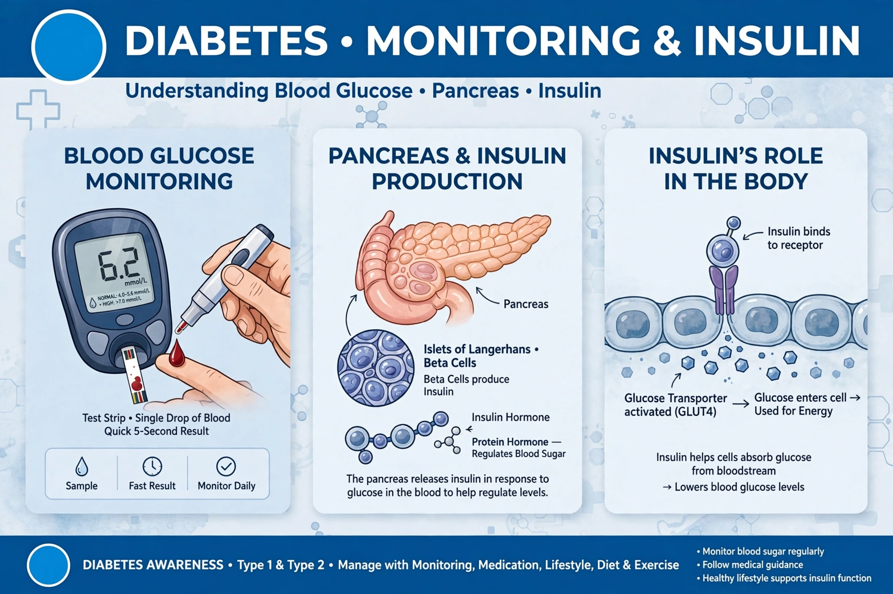

Diabetes mellitus, commonly known as diabetes, is a group of metabolic diseases characterised by persistently high blood sugar (hyperglycemia). Symptoms often include frequent urination, increased thirst and hunger. Left untreated it can damage the heart, blood vessels, eyes, kidneys and nerves. About 830 million adults worldwide were estimated to live with diabetes in 2022.

| Diabetes mellitus | |
|---|---|
| Symptoms | Frequent urination, thirst, hunger, weight loss |
| Causes | Insulin deficiency or resistance |
| Risk factors | Genetics, obesity, inactivity (type 2) |
| Treatment | Diet, exercise, metformin, insulin |
Type 1 diabetes results from autoimmune destruction of insulin-producing beta cells in the pancreas. Type 2 diabetes, about 90% of cases, begins with insulin resistance, often linked to excess body weight and inactivity, and progresses to inadequate insulin secretion. Gestational diabetes occurs in pregnancy. Other forms arise from genetic defects, pancreatic disease, or drugs. Diabetes insipidus, a separate condition of water balance, shares only the name.
Acute complications include diabetic ketoacidosis and hyperosmolar hyperglycemic state. Chronic hyperglycemia causes cardiovascular disease, chronic kidney disease, diabetic retinopathy — a leading cause of blindness — foot ulcers and neuropathy.
Diagnosis uses fasting plasma glucose, oral glucose tolerance testing, or glycated haemoglobin (HbA1c) ≥6.5%. Management centres on lifestyle, blood-sugar monitoring, oral agents such as metformin, GLP-1 receptor agonists, and insulin therapy, plus control of blood pressure and lipids.
Diabetes was described in ancient Egypt and India; Aretaeus coined the name from Greek for 'siphon'. Insulin was isolated at Toronto in 1921 by Banting, Best, Macleod and Collip, transforming a fatal disease into a manageable one.